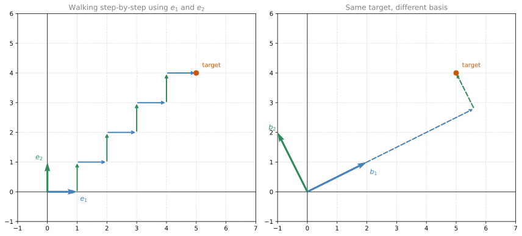
Eigenvalues and Eigenvectors
linear-algebra
Before we get to eigenvalues and eigenvectors, we need to build up a concept that sits at the heart of linear algebra: the basis. You have actually…
Before we get to eigenvalues and eigenvectors, we need to build up a concept that sits at the heart of linear algebra: the basis. You have actually seen bases many times through this course in different ways. In the previous notes, you learned that a matrix can be seen as a linear transformation from the plane to the plane, sending the unit square into a parallelogram. Both of those (the square and the parallelogram) were called bases. But why?
In reality, all that matters is not the four corners of the square or the parallelogram, but the two vectors that define them. Namely, the two vectors coming from the origin. Those are what we call a basis from now on.
What Is a Basis?
The main property of a basis is this: every point in the space can be reached as a linear combination of the basis vectors. Think of it like walking. You are given two directions (the basis vectors), and you are only allowed to walk along those directions. Can you reach any point in the plane?
Let’s say we have two vectors that point in different directions. Pick any point in the plane. Can you get there by only walking in those two directions? Yes, you can. You might walk a bit in the first direction, then a bit in the second, then more in the first, and so on. There are actually infinitely many ways to do it, since you don’t have to take unit steps. You can walk in tiny fractions of steps, and you can even walk backwards.
So these two vectors form a basis for the plane. Can we think of other bases? There are lots. Pretty much any two vectors that point in different directions form a basis, because you can always combine their directions to reach any point.
Many Possible Bases
Here is the key insight: there are infinitely many valid bases for the plane. Any pair of vectors works, as long as they don’t point in the same (or exactly opposite) direction.
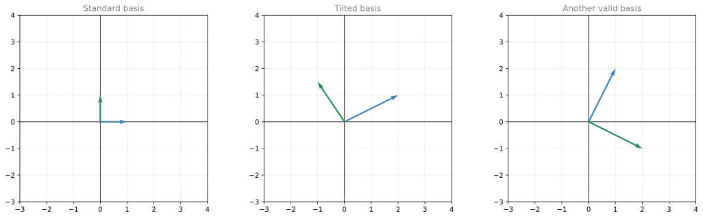
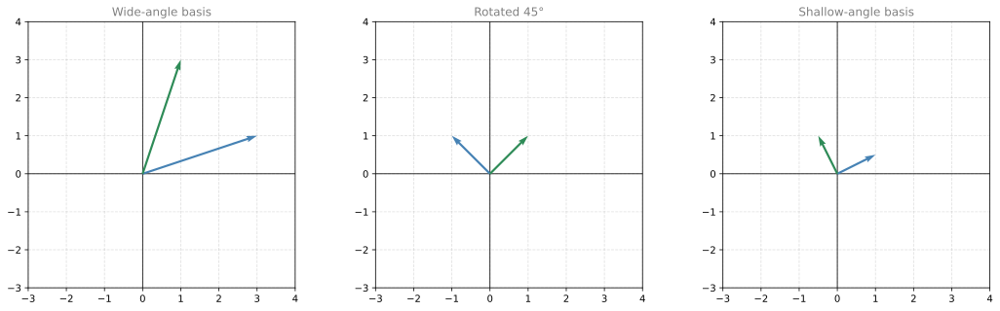
What Is NOT a Basis?
Now, what would fail to be a basis? Consider two vectors that point in the same direction (one is just a stretched or flipped version of the other). If you can only walk along that one line, you will never be able to reach points off the line. You can cover the line itself, but you cannot cover the entire plane.
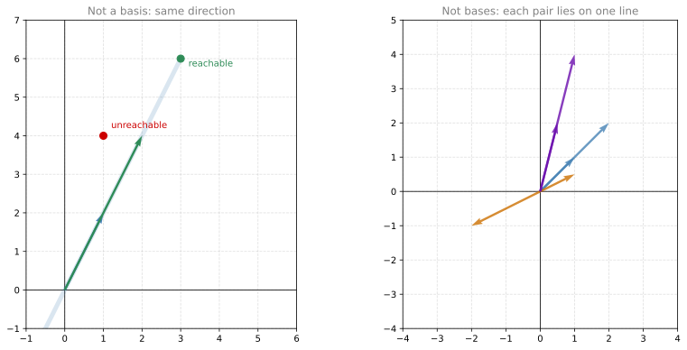
So the rule is simple: as long as two vectors belong to the same line (whether pointing in the same direction or in opposite directions), they do not form a basis for the plane. They only span that single line.
Span
Now let’s give this idea a proper name. The span of a set of vectors is the set of all points you can reach by walking in the directions of those vectors (in any combination, any number of steps, including backwards).
- The span of two vectors in different directions is the entire plane.
- The span of two vectors in the same direction is just a line.
- The span of a single vector is the line through the origin in that direction.
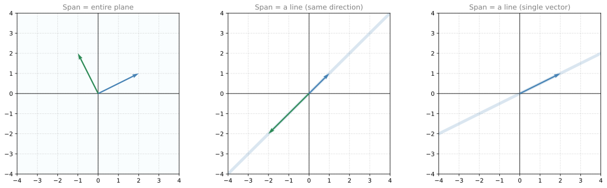
Here is a question: if two vectors both lie on the same line, do they form a basis for that line? The answer is no. A basis needs to be a minimal spanning set. Either one of those vectors alone already spans the line, so having two is redundant. Each one separately is a basis for the line, but the pair together is not a basis (it’s a spanning set, but not minimal).
A Basis Is a Minimal Spanning Set
Let’s put it all together with a few observations:
- A line (1-dimensional space) needs exactly 1 vector as a basis.
- The plane (2-dimensional space) needs exactly 2 vectors as a basis.
- 3D space needs exactly 3 vectors as a basis.
The number of vectors in a basis always equals the dimension of the space. This also means that any basis for the same space has the same number of elements.
| Space | Dimension | Basis size |
|---|---|---|
| A line through the origin | 1 | 1 vector |
| The plane (\(\mathbb{R}^2\)) | 2 | 2 vectors |
| 3D space (\(\mathbb{R}^3\)) | 3 | 3 vectors |
| \(n\)-dimensional space (\(\mathbb{R}^n\)) | \(n\) | \(n\) vectors |
NoteWhat does \(\mathbb{R}^n\) mean?
The symbol \(\mathbb{R}\) stands for the real numbers (all the numbers on the number line: 0, 1, -3.5, \(\pi\), etc.). The superscript tells you how many coordinates each point has. So \(\mathbb{R}^2\) is the plane (each point has 2 coordinates, like \((x, y)\)), and \(\mathbb{R}^3\) is 3D space (each point has 3 coordinates, like \((x, y, z)\)).
If you take two vectors and they span the plane, that’s a basis. But if you add a third vector, the set is too big to be a basis (even though it still spans the plane). The third vector is redundant, because it can be reached using the first two.
To state this more formally: a basis for a vector space is a set of vectors that satisfies two conditions:
- The set spans the space (you can reach every point by combining these vectors).
- The vectors are linearly independent (none is redundant).
These two conditions are exactly what “minimal spanning set” means. The set spans (covers everything), and removing any vector would break that property (minimal).
Linear Independence and Dependence
This brings us to the concept that formalizes “redundancy.” A set of vectors is linearly independent if none of them can be written as a linear combination of the others. If one of them can be written in terms of the rest, the set is linearly dependent.
Think of it this way: if you add a new vector to a set and the span doesn’t grow (doesn’t cover any new territory), that new vector is redundant, and the set has become linearly dependent.
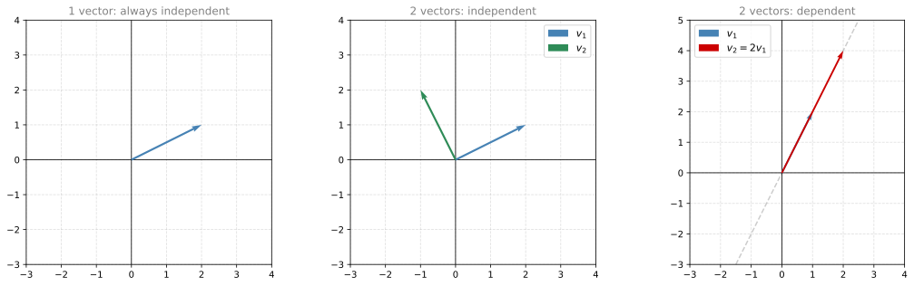
Here are a few examples:
- One vector in the plane is always linearly independent on its own.
- Two vectors pointing in different directions are linearly independent. You cannot get one from the other.
- Two vectors pointing in the same direction are linearly dependent. One is just a scalar multiple of the other (for example, \(v_2 = 2 v_1\)). The span didn’t grow when you added the second.
What about three vectors in the plane? Even if no single vector is a multiple of another, three vectors in 2D are always linearly dependent. You can always write one of them as a combination of the other two, because two vectors already cover the entire plane. Adding a third cannot expand the span beyond the plane.
Checking Linear Dependence
To check if vectors \(\color{#CC7000}{v_1}\), \(\color{#2E8B57}{v_2}\), \(\color{#CC0000}{v_3}\) are linearly dependent, try to express one as a combination of the others. This gives a system of equations.
Example: Let \(\color{#CC7000}{v_1 = \begin{bmatrix} -1 \\ 1 \end{bmatrix}}\), \(\color{#2E8B57}{v_2 = \begin{bmatrix} 2 \\ 1 \end{bmatrix}}\), \(\color{#CC0000}{v_3 = \begin{bmatrix} -5 \\ 3 \end{bmatrix}}\).
We want to find \(\color{#CC7000}{\alpha}\) and \(\color{#2E8B57}{\beta}\) such that \(\color{#CC7000}{\alpha v_1} \color{black}{+} \color{#2E8B57}{\beta v_2} \color{black}{=} \color{#CC0000}{v_3}\):
\[\color{#CC7000}{\alpha} \color{#CC7000}{\begin{bmatrix} -1 \\ 1 \end{bmatrix}} \color{black}{+} \color{#2E8B57}{\beta} \color{#2E8B57}{\begin{bmatrix} 2 \\ 1 \end{bmatrix}} \color{black}{=} \color{#CC0000}{\begin{bmatrix} -5 \\ 3 \end{bmatrix}}\]
Reading off each row gives a system of two equations with two unknowns:
\[\color{#CC7000}{-\alpha} \color{black}{+} \color{#2E8B57}{2\beta} \color{black}{=} \color{#CC0000}{-5} \qquad \color{#CC7000}{\alpha} \color{black}{+} \color{#2E8B57}{\beta} \color{black}{=} \color{#CC0000}{3}\]
Adding both equations: \(\color{#2E8B57}{3\beta = -2}\), so \(\color{#2E8B57}{\beta = -\frac{2}{3}}\). Substituting into the second equation: \(\color{#CC7000}{\alpha = 3 + \frac{2}{3} = \frac{11}{3}}\).
Since we found a solution, \(\color{#CC0000}{v_3}\) is a linear combination of \(\color{#CC7000}{v_1}\) and \(\color{#2E8B57}{v_2}\), confirming the set is linearly dependent. If instead the system had no solution, the vectors would be linearly independent.
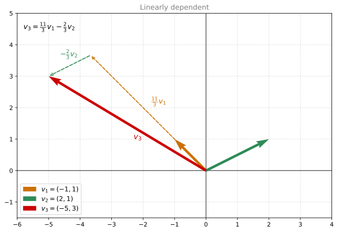
Three Vectors in 3D
If you have three vectors that live in three-dimensional space (they have three coordinates each), they might or might not be linearly independent. If all three lie in the same plane, they are dependent. If they “spread out” into all three dimensions, they are independent and form a basis for \(\mathbb{R}^3\).
For example, the vectors \(\begin{bmatrix}1\\0\\1\end{bmatrix}\), \(\begin{bmatrix}0\\1\\1\end{bmatrix}\), \(\begin{bmatrix}1\\-1\\0\end{bmatrix}\) are linearly dependent because the third equals the first minus the second. Geometrically, all three lie in the same plane through the origin.
Review Questions
1. Do the vectors \(\begin{bmatrix} 1 \\ 3 \end{bmatrix}\) and \(\begin{bmatrix} -2 \\ -6 \end{bmatrix}\) form a basis for \(\mathbb{R}^2\)?
TipAnswer
No. The second vector is \(-2\) times the first, so they are linearly dependent (they point along the same line). They only span a line, not the entire plane.
1. You have three vectors in \(\mathbb{R}^2\). Can they form a basis for the plane?
TipAnswer
No. A basis for \(\mathbb{R}^2\) must have exactly 2 vectors. Three vectors in the plane are always linearly dependent (at least one is redundant). They span the plane, but the set is not minimal.
1. A single non-zero vector in \(\mathbb{R}^3\): what does it span?
TipAnswer
It spans a line through the origin in the direction of that vector. It forms a basis for that line (a 1-dimensional subspace of \(\mathbb{R}^3\)), but not for the full 3D space.
1. Given the vectors \(\begin{bmatrix}1\\2\\3\end{bmatrix}\), \(\begin{bmatrix}0\\1\\1\end{bmatrix}\), \(\begin{bmatrix}1\\1\\2\end{bmatrix}\), are they linearly independent?
TipAnswer
Check: does \(v_1 - v_2 = v_3\)? We get \(\begin{bmatrix}1\\2\\3\end{bmatrix} - \begin{bmatrix}0\\1\\1\end{bmatrix} = \begin{bmatrix}1\\1\\2\end{bmatrix} = v_3\). Yes! So the set is linearly dependent. All three vectors lie in the same plane through the origin in \(\mathbb{R}^3\).
1. What is the span of the following vectors? \(\begin{bmatrix}2\\1\\1\end{bmatrix}\), \(\begin{bmatrix}1\\0\\2\end{bmatrix}\), \(\begin{bmatrix}1\\0\\1\end{bmatrix}\)
Options: The entire 3D space / A plane in 3D space
TipAnswer
The entire 3-dimensional space. The rank of the matrix formed by these vectors is 3, meaning they are linearly independent and span all of \(\mathbb{R}^3\).
1. Select all the options that are a basis for the 3D space:
\(\begin{bmatrix}1\\0\\1\end{bmatrix}, \begin{bmatrix}0\\1\\0\end{bmatrix}, \begin{bmatrix}1\\0\\0\end{bmatrix}\)
\(\begin{bmatrix}2\\3\\1\end{bmatrix}, \begin{bmatrix}0\\2.5\\3.5\end{bmatrix}, \begin{bmatrix}0\\5.5\\4.5\end{bmatrix}\)
\(\begin{bmatrix}2\\3\\1\end{bmatrix}, \begin{bmatrix}0\\-1\\2\end{bmatrix}, \begin{bmatrix}-1\\1\\4\end{bmatrix}\)
\(\begin{bmatrix}-1\\2\\1\end{bmatrix}, \begin{bmatrix}1\\2\\2\end{bmatrix}, \begin{bmatrix}1\\6\\5\end{bmatrix}\)
\(\begin{bmatrix}-1\\2\\1\end{bmatrix}, \begin{bmatrix}1\\2\\2\end{bmatrix}, \begin{bmatrix}1\\0\\1\end{bmatrix}\)
TipAnswer
Options a, b, c, and e are bases (their determinants are non-zero: -1, -16, -19, -2). Option d is NOT a basis because its determinant is 0 (the vectors are linearly dependent).
Eigenbasis: A Very Special Basis
Now that you know what a basis is, you should know that some bases are more useful than others. In particular, there is one basis to rule them all: the eigenbasis. It is tremendously useful, especially for machine learning applications like principal component analysis.
Here’s the idea. Consider the linear transformation given by the matrix:
\[A = \begin{bmatrix} 2 & 1 \\ 0 & 3 \end{bmatrix}\]
Let’s first see how it acts on the standard basis. The vector \(\begin{bmatrix}1\\0\end{bmatrix}\) gets mapped to \(\begin{bmatrix}2\\0\end{bmatrix}\), and the vector \(\begin{bmatrix}0\\1\end{bmatrix}\) gets mapped to \(\begin{bmatrix}1\\3\end{bmatrix}\). The unit square on the left goes to a parallelogram on the right, and the rest of the plane follows. This is just a change of basis, something you have already seen.
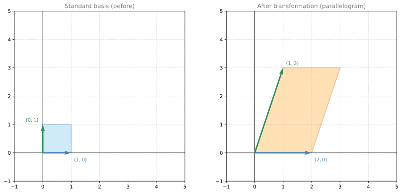
But the choice of the standard basis was arbitrary. What if we pick a different basis and see what happens?
Finding the Special Basis
Let’s keep the vector \(\begin{bmatrix}1\\0\end{bmatrix}\) (which maps to \(\begin{bmatrix}2\\0\end{bmatrix}\)), but as a second basis vector, let’s try \(\begin{bmatrix}1\\1\end{bmatrix}\). Multiplying by the matrix:
\[A \begin{bmatrix}1\\1\end{bmatrix} = \begin{bmatrix}2 \cdot 1 + 1 \cdot 1\\0 \cdot 1 + 3 \cdot 1\end{bmatrix} = \begin{bmatrix}3\\3\end{bmatrix}\]
Now look at what happened. The vector \(\begin{bmatrix}1\\0\end{bmatrix}\) mapped to \(\begin{bmatrix}2\\0\end{bmatrix}\), which is just 2 times the original. The vector \(\begin{bmatrix}1\\1\end{bmatrix}\) mapped to \(\begin{bmatrix}3\\3\end{bmatrix}\), which is just 3 times the original. The parallelogram on the right has sides parallel to the parallelogram on the left. That is very special.
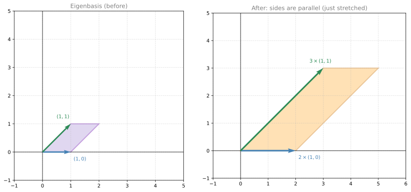
Because the sides are parallel, the transformation is doing something very simple: it stretches by 2 in the horizontal direction, and stretches by 3 in the diagonal direction. That’s it. No rotation, no shearing. Just two stretchings. This is what makes it an eigenbasis.
Why Is This Useful?
Let’s say you want to find the image of the point \((3, 2)\) under this transformation. You could multiply it by the matrix directly and get \(\begin{bmatrix}2 \cdot 3 + 1 \cdot 2\\0 \cdot 3 + 3 \cdot 2\end{bmatrix} = \begin{bmatrix}8\\6\end{bmatrix}\).
But you can also think of it through the eigenbasis. Express the point \((3, 2)\) as a combination of the eigenvectors: \((3, 2) = 1 \cdot (1, 0) + 2 \cdot (1, 1)\). Now the transformation just stretches each component:
- The \((1, 0)\) part gets stretched by 2: \(1 \cdot 2 \cdot (1, 0) = (2, 0)\)
- The \((1, 1)\) part gets stretched by 3: \(2 \cdot 3 \cdot (1, 1) = (6, 6)\)
- Add them up: \((2, 0) + (6, 6) = (8, 6)\) ✓
The transformation reduced to just multiplying by the stretching factors. No matrix multiplication needed.
Eigenvalues and Eigenvectors
The two vectors in this special basis are called eigenvectors, and the stretching factors (2 and 3) are called eigenvalues. The prefix “eigen” is German for “own” or “characteristic.” So an eigenvector is the matrix’s “own vector,” the direction that belongs to it naturally, where it acts in the simplest possible way (pure scaling).
In general, a vector \(v\) is an eigenvector of a matrix \(A\) with eigenvalue \(\lambda\) if:
\[Av = \lambda v\]
The matrix only scales the vector, without changing its direction. In our example:
\[A \begin{bmatrix}1\\0\end{bmatrix} = 2 \begin{bmatrix}1\\0\end{bmatrix} \qquad A \begin{bmatrix}1\\1\end{bmatrix} = 3 \begin{bmatrix}1\\1\end{bmatrix}\]
The eigenvectors are \((1,0)\) and \((1,1)\). The eigenvalues are 2 and 3.
Review Questions
1. For the matrix \(A = \begin{bmatrix}2 & 1\\0 & 3\end{bmatrix}\), verify that \((1,0)\) is an eigenvector. What is its eigenvalue?
TipAnswer
\(A \begin{bmatrix}1\\0\end{bmatrix} = \begin{bmatrix}2\\0\end{bmatrix} = 2 \begin{bmatrix}1\\0\end{bmatrix}\). The output is exactly 2 times the input, so \((1,0)\) is an eigenvector with eigenvalue \(\lambda = 2\).
1. Is the vector \((1, 2)\) an eigenvector of \(A = \begin{bmatrix}2 & 1\\0 & 3\end{bmatrix}\)?
TipAnswer
\(A \begin{bmatrix}1\\2\end{bmatrix} = \begin{bmatrix}2 + 2\\0 + 6\end{bmatrix} = \begin{bmatrix}4\\6\end{bmatrix}\). Is this a scalar multiple of \((1, 2)\)? That would require \(\begin{bmatrix}4\\6\end{bmatrix} = \lambda \begin{bmatrix}1\\2\end{bmatrix}\), giving \(\lambda = 4\) from the first entry but \(\lambda = 3\) from the second. These don’t match, so \((1, 2)\) is not an eigenvector.
1. If a matrix has eigenvalues 2 and 3, what does the transformation do geometrically (when viewed from the eigenbasis)?
TipAnswer
It stretches space by a factor of 2 in one eigenvector direction, and by a factor of 3 in the other eigenvector direction. No rotation or shearing, just two independent scalings.
Why Eigenvectors Are Special
Let’s look more closely at why eigenvectors are so powerful. We’ll multiply our matrix \(A = \begin{bmatrix}2 & 1\\0 & 3\end{bmatrix}\) by three vectors: two that are eigenvectors and one that is not.
First vector: \(\begin{bmatrix}1\\0\end{bmatrix}\) is an eigenvector. After the transformation it becomes \(\begin{bmatrix}2\\0\end{bmatrix}\). Notice that the vector is still pointing in the same direction. We can write the result as \(2 \cdot \begin{bmatrix}1\\0\end{bmatrix}\).
Second vector: \(\begin{bmatrix}1\\1\end{bmatrix}\) is also an eigenvector. After the transformation it becomes \(\begin{bmatrix}3\\3\end{bmatrix}\). Again, same direction. We can write this as \(3 \cdot \begin{bmatrix}1\\1\end{bmatrix}\).
Third vector: \(\begin{bmatrix}-1\\2\end{bmatrix}\) is not an eigenvector. After the transformation it becomes \(\begin{bmatrix}0\\6\end{bmatrix}\). This is no longer pointing in the same direction, and there is no single constant you can multiply \(\begin{bmatrix}-1\\2\end{bmatrix}\) by to get \(\begin{bmatrix}0\\6\end{bmatrix}\).
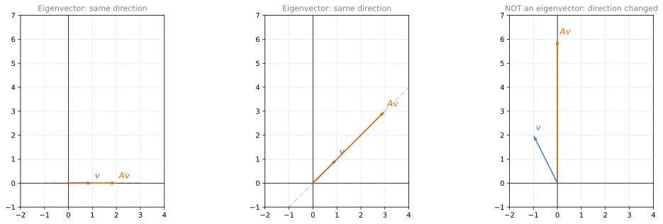
Eigenvalues and Eigenvectors Come in Pairs
Let’s write this more formally. Call our matrix \(A\), and call the eigenvectors \(v_1\) and \(v_2\):
The left side of the equation (\(Av\)) is a matrix multiplication (more work: 8 multiplications for a \(2 \times 2\)). The right side (\(\lambda v\)) is a scalar multiplication (less work: only 2 multiplications). Along the eigenvector directions, the expensive operation becomes a cheap one.
The \(\color{#CC7000}{\text{eigenvectors}}\) are the vectors that only get scaled. The \(\color{#2E8B57}{\text{eigenvalues}}\) are the scaling factors. They always come in pairs: each eigenvector has its own eigenvalue.
Matrix Multiplication vs. Scalar Multiplication
Look at what the equation \(Av = \lambda v\) is really saying. On the left side you have a matrix multiplication (a lot of work). On the right side you have a scalar multiplication (very little work). For our small \(2 \times 2\) example, the left side requires 8 multiplications, while the right side only takes 2. For matrices with hundreds or thousands of columns, the difference becomes enormous.
So along the eigenvector directions, you can replace expensive matrix multiplication with cheap scalar multiplication.
Using the Eigenbasis for Any Vector
But what about vectors that are not eigenvectors? Can we still use this shortcut?
Yes. Here’s the key insight: if the eigenvectors \(v_1\) and \(v_2\) are linearly independent (which they are in our example), they form a basis. That means every vector in the plane can be written as a combination of them.
Take the vector \(\begin{bmatrix}-1\\2\end{bmatrix}\) (the one that is not an eigenvector). We can express it in the eigenbasis:
\[\begin{bmatrix}-1\\2\end{bmatrix} = (-3) \cdot \begin{bmatrix}1\\0\end{bmatrix} + 2 \cdot \begin{bmatrix}1\\1\end{bmatrix}\]
Now apply the transformation. Because \(A\) is linear, we can distribute it:
\[A\begin{bmatrix}-1\\2\end{bmatrix} = (-3) \cdot A\begin{bmatrix}1\\0\end{bmatrix} + 2 \cdot A\begin{bmatrix}1\\1\end{bmatrix}\]
And here’s where we use the eigenvector shortcut. We already know \(A v_1 = 2 v_1\) and \(A v_2 = 3 v_2\), so:
\[= (-3) \cdot 2 \cdot \begin{bmatrix}1\\0\end{bmatrix} + 2 \cdot 3 \cdot \begin{bmatrix}1\\1\end{bmatrix} = \begin{bmatrix}-6\\0\end{bmatrix} + \begin{bmatrix}6\\6\end{bmatrix} = \begin{bmatrix}0\\6\end{bmatrix}\]
We got the same answer without doing any matrix multiplication. Only scalar multiplications.
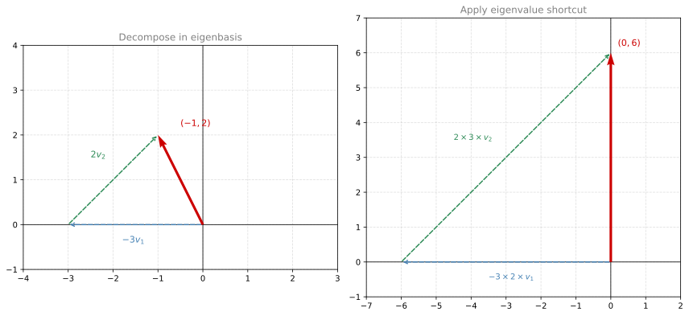
A Fair Warning
There is a catch. In the example above, we “just knew” that \((-1, 2) = -3 \cdot (1,0) + 2 \cdot (1,1)\). But in general, finding the coordinates of a vector in the eigenbasis requires computing the inverse of the eigenvector matrix and multiplying. So eigenvectors don’t remove all the work. They let you decide when to do the work. In many machine learning contexts, it is worth computing the eigenbasis once up front, so that every subsequent transformation becomes fast scalar multiplication.
Key Takeaways
- Eigenvectors and eigenvalues are characterized by the equation \(Av = \lambda v\).
- Along an eigenvector direction, matrix multiplication becomes scalar multiplication.
- Visually, eigenvectors are the directions in which a transformation is just a stretch. The eigenvalue tells you how much it stretches.
- The eigenvectors (if linearly independent) form a basis called the eigenbasis.
- From the perspective of the eigenbasis, the linear transformation is just a collection of stretches (one per axis).
Review Questions
1. The matrix \(A = \begin{bmatrix}2 & 1\\0 & 3\end{bmatrix}\) is applied to the vector \((-1, 2)\). Using the eigenbasis decomposition \((-1,2) = -3(1,0) + 2(1,1)\), compute \(A(-1,2)\) without matrix multiplication.
TipAnswer
\(A(-1,2) = -3 \cdot \lambda_1 \cdot v_1 + 2 \cdot \lambda_2 \cdot v_2 = -3(2)(1,0) + 2(3)(1,1) = (-6, 0) + (6, 6) = (0, 6)\).
1. Why can’t we always avoid matrix multiplication using eigenvectors?
TipAnswer
To use the eigenvector shortcut, you first need to express your vector in the eigenbasis. Finding those coordinates requires computing the inverse of the eigenvector matrix and multiplying by it. So the work isn’t eliminated, just moved to a different step. The advantage comes when you need to apply the same transformation many times (compute the eigenbasis once, then every application is just scalar multiplication).
1. A \(2 \times 2\) matrix multiplication requires how many scalar multiplications? And multiplying by an eigenvalue requires how many?
TipAnswer
A \(2 \times 2\) matrix times a vector requires \(2 \times 2 = 4\) multiplications (and 2 additions). Multiplying by an eigenvalue requires just 2 multiplications (one per component). For an \(n \times n\) matrix, it’s \(n^2\) vs. \(n\), which becomes a huge difference for large \(n\).
Finding Eigenvalues: Characteristic Polynomial
Now that you know what eigenvalues and eigenvectors are, you may be wondering: how do you actually find them? The process involves solving an equation with a determinant.
Key Idea
Let’s go back to our matrix \(A = \begin{bmatrix}2 & 1\\0 & 3\end{bmatrix}\). We know that eigenvalue \(\lambda = 3\) means the transformation \(A\) and the uniform scaling by 3 (the matrix \(3I = \begin{bmatrix}3&0\\0&3\end{bmatrix}\)) produce the same result for infinitely many vectors (all vectors along the diagonal direction).
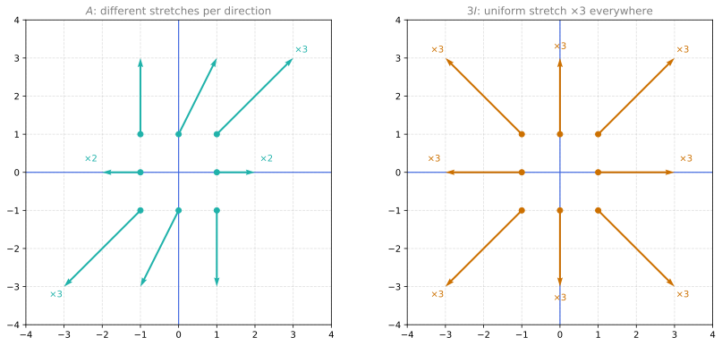
These two transformations are not the same. But notice: along the diagonal direction (\(y = x\)), they produce the exact same result. Both stretch those vectors by a factor of 3. They match at infinitely many points along that line.
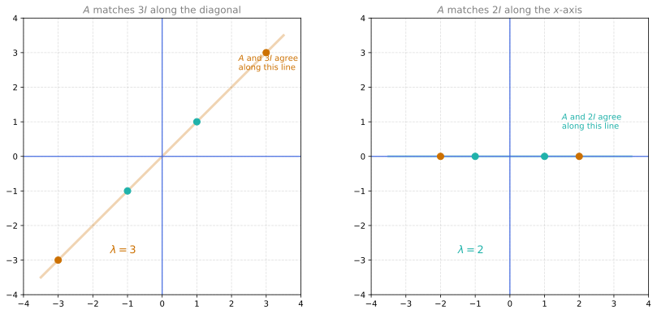
If two transformations match at infinitely many points, their difference sends infinitely many vectors to zero. In other words:
\[(A - 3I)\begin{bmatrix}x\\y\end{bmatrix} = \begin{bmatrix}0\\0\end{bmatrix} \quad \text{for infinitely many } (x, y)\]
This is the hallmark of a singular matrix. A non-singular matrix has only one solution to \(Mx = 0\) (the zero vector itself). If there are infinitely many solutions, the matrix must be singular, which means its determinant is zero.
The same logic applies for eigenvalue \(\lambda = 2\): the difference \(A - 2I = \begin{bmatrix}0&1\\0&1\end{bmatrix}\) is also singular (determinant = 0).
General Method
If \(\lambda\) is an eigenvalue, then the matrix \((A - \lambda I)\) must be singular:
\[\det(A - \lambda I) = 0\]
This is called the characteristic equation. Expanding the determinant gives a polynomial in \(\lambda\) called the characteristic polynomial. The roots of this polynomial are the eigenvalues.
Example: Finding Eigenvalues of \(\begin{bmatrix}2&1\\0&3\end{bmatrix}\)
\[A - \lambda I = \begin{bmatrix}2-\lambda & 1\\0 & 3-\lambda\end{bmatrix}\]
\[\det(A - \lambda I) = (2-\lambda)(3-\lambda) - 0 = \lambda^2 - 5\lambda + 6 = (\lambda - 2)(\lambda - 3) = 0\]
The eigenvalues are \(\lambda_1 = 2\) and \(\lambda_2 = 3\).
Finding the Eigenvectors
Once you have the eigenvalues, plug each one back into \((A - \lambda I)v = 0\) and solve.
For \(\lambda_1 = 2\): Solve \((A - 2I)v = 0\):
\[\begin{bmatrix}0 & 1\\0 & 1\end{bmatrix}\begin{bmatrix}x\\y\end{bmatrix} = \begin{bmatrix}0\\0\end{bmatrix}\]
This gives \(y = 0\), and \(x\) is free. So the eigenvector is any multiple of \(\begin{bmatrix}1\\0\end{bmatrix}\).
For \(\lambda_2 = 3\): Solve \((A - 3I)v = 0\):
\[\begin{bmatrix}-1 & 1\\0 & 0\end{bmatrix}\begin{bmatrix}x\\y\end{bmatrix} = \begin{bmatrix}0\\0\end{bmatrix}\]
This gives \(-x + y = 0\), so \(y = x\). The eigenvector is any multiple of \(\begin{bmatrix}1\\1\end{bmatrix}\).
These match what we found geometrically earlier.
Review Questions
1. Find the eigenvalues and eigenvectors of \(A = \begin{bmatrix}9&4\\4&3\end{bmatrix}\).
TipAnswer
Characteristic polynomial:
\[\det(A - \lambda I) = (9-\lambda)(3-\lambda) - 16 = \lambda^2 - 12\lambda + 11 = (\lambda - 11)(\lambda - 1) = 0\]
Eigenvalues: \(\lambda_1 = 11\), \(\lambda_2 = 1\).
For \(\lambda_1 = 11\): \((A - 11I)v = 0 \Rightarrow \begin{bmatrix}-2&4\\4&-8\end{bmatrix}v = 0\). First row gives \(-2x + 4y = 0\), so \(x = 2y\). Eigenvector: \(\begin{bmatrix}2\\1\end{bmatrix}\).
For \(\lambda_2 = 1\): \((A - I)v = 0 \Rightarrow \begin{bmatrix}8&4\\4&2\end{bmatrix}v = 0\). First row gives \(8x + 4y = 0\), so \(y = -2x\). Eigenvector: \(\begin{bmatrix}-1\\2\end{bmatrix}\).
1. Select the characteristic polynomial for \(M = \begin{bmatrix}2&1\\-3&6\end{bmatrix}\):
Options: \(\lambda^2 - 8\lambda - 1\) / \(\lambda^2 + 8\lambda + 15\) / \(\lambda^3 - 8\lambda + 15\) / \(\lambda^2 - 8\lambda + 15\)
TipAnswer
\(\lambda^2 - 8\lambda + 15\). We compute \(\det(M - \lambda I) = (2-\lambda)(6-\lambda) - (1)(-3) = \lambda^2 - 8\lambda + 12 + 3 = \lambda^2 - 8\lambda + 15\).
1. Consider \(M = \begin{bmatrix}3&0\\-2&1\end{bmatrix}\). The characteristic polynomial is \((3-\lambda)(1-\lambda)\). Check all options that represent eigenvectors:
\(\begin{bmatrix}k\\-k\end{bmatrix}\) for any \(k\) real
\(\begin{bmatrix}0\\k\end{bmatrix}\) for any \(k\) real
\(\begin{bmatrix}k\\k\end{bmatrix}\) for any \(k\) real
\(\begin{bmatrix}1\\3\end{bmatrix}\)
TipAnswer
Options b and a. Eigenvalues are \(\lambda=3\) and \(\lambda=1\). For \(\lambda=3\): \((M-3I)v=0\) gives \(\begin{bmatrix}0&0\\-2&-2\end{bmatrix}v=0\), so \(v_1=-v_2\), giving \(\begin{bmatrix}k\\-k\end{bmatrix}\). For \(\lambda=1\): \((M-I)v=0\) gives \(\begin{bmatrix}2&0\\-2&0\end{bmatrix}v=0\), so \(v_1=0\), giving \(\begin{bmatrix}0\\k\end{bmatrix}\).
A 3×3 Example
The process works the same way for larger matrices. Consider:
\[A = \begin{bmatrix}2 & 1 & -1\\1 & 0 & -3\\-1 & -3 & 0\end{bmatrix}\]
The characteristic polynomial is \(\det(A - \lambda I)\). Expanding (using cofactor expansion or the diagonal method for \(3 \times 3\)):
\[-\lambda^3 + 2\lambda^2 + 11\lambda - 12 = 0\]
Factoring: \(-(\lambda + 3)(\lambda - 1)(\lambda - 4) = 0\)
The eigenvalues are \(\lambda_1 = -3\), \(\lambda_2 = 1\), \(\lambda_3 = 4\).
For each eigenvalue, solve \((A - \lambda I)v = 0\) to get the eigenvectors. For example, for \(\lambda_3 = 4\):
\[(A - 4I)v = \begin{bmatrix}-2 & 1 & -1\\1 & -4 & -3\\-1 & -3 & -4\end{bmatrix}\begin{bmatrix}x_1\\x_2\\x_3\end{bmatrix} = \begin{bmatrix}0\\0\\0\end{bmatrix}\]
Solving this system (by row reduction or substitution), you find \(x_1 = k\), \(x_2 = k\), \(x_3 = -k\) for any value of \(k\). So \((1,1,-1)\), \((2,2,-2)\), \((-3,-3,3)\) are all valid eigenvectors. There are infinitely many, all pointing in the same direction. We typically pick the simplest one: \(\begin{bmatrix}1\\1\\-1\end{bmatrix}\).
Repeating for the other eigenvalues gives:
| Eigenvalue | Eigenvector |
|---|---|
| \(\lambda = -3\) | \(\begin{bmatrix}2\\-1\\1\end{bmatrix}\) |
| \(\lambda = 1\) | \(\begin{bmatrix}0\\1\\1\end{bmatrix}\) |
| \(\lambda = 4\) | \(\begin{bmatrix}1\\1\\-1\end{bmatrix}\) |
Important Note: Only Square Matrices
Eigenvalues and eigenvectors are only defined for square matrices. The characteristic equation requires computing a determinant, and determinants only exist for square matrices. A \(3 \times 5\) matrix, for example, does not have eigenvalues or eigenvectors.
Review Questions
1. What is the characteristic polynomial of \(A = \begin{bmatrix}5&2\\2&1\end{bmatrix}\)? What are its eigenvalues?
TipAnswer
\(\det(A - \lambda I) = (5-\lambda)(1-\lambda) - 4 = \lambda^2 - 6\lambda + 1 = 0\).
Using the quadratic formula: \(\lambda = \frac{6 \pm \sqrt{36-4}}{2} = \frac{6 \pm \sqrt{32}}{2} = 3 \pm 2\sqrt{2}\).
So \(\lambda_1 = 3 + 2\sqrt{2} \approx 5.83\) and \(\lambda_2 = 3 - 2\sqrt{2} \approx 0.17\).
1. Why does \(\det(A - \lambda I) = 0\) give us the eigenvalues?
TipAnswer
If \(\lambda\) is an eigenvalue, there exists a non-zero vector \(v\) such that \(Av = \lambda v\), which means \((A - \lambda I)v = 0\) has a non-zero solution. A system \(Mx = 0\) has non-zero solutions only when \(M\) is singular, and a matrix is singular exactly when its determinant is zero.
1. Can a \(3 \times 5\) matrix have eigenvalues?
TipAnswer
No. Eigenvalues require computing \(\det(A - \lambda I)\), but the determinant is only defined for square matrices. Only square matrices (\(n \times n\)) have eigenvalues and eigenvectors.
How Many Eigenvectors Does a Matrix Have?
In the previous \(3 \times 3\) example, we had three different eigenvalues and found three different eigenvectors (one for each). Does that always happen? Can every \(3 \times 3\) matrix produce three eigenvectors? It turns out that repeated eigenvalues can complicate things. Let’s explore two examples that show both outcomes.
Example 1: Repeated Eigenvalue, Still Three Eigenvectors
Consider the matrix:
\[A = \begin{bmatrix}2 & 0 & 0\\-1 & 4 & -0.5\\0 & 0 & 2\end{bmatrix}\]
The characteristic polynomial is \(\det(A - \lambda I) = (2-\lambda)^2(4-\lambda) = 0\), giving eigenvalues \(\lambda = 4\) and \(\lambda = 2\) (repeated twice).
For \(\lambda = 4\): Solving \((A - 4I)v = 0\) leads to \(x_1 = 0\), \(x_3 = 0\), and \(x_2\) is free. Eigenvector: \(\begin{bmatrix}0\\1\\0\end{bmatrix}\).
For \(\lambda = 2\): Solving \((A - 2I)v = 0\) gives the single equation \(-x_1 + 2x_2 - 0.5x_3 = 0\), with \(x_2\) and \(x_3\) both free. This means we have two degrees of freedom. Choosing different values gives different directions:
- \(x_2 = 1, x_3 = 0 \Rightarrow x_1 = 2\): eigenvector \(\begin{bmatrix}2\\1\\0\end{bmatrix}\)
- \(x_2 = 1, x_3 = 2 \Rightarrow x_1 = 1\): eigenvector \(\begin{bmatrix}1\\1\\2\end{bmatrix}\)
These two vectors point in genuinely different directions, so we have two independent eigenvectors for the eigenvalue 2. Combined with the eigenvector for eigenvalue 4, that gives us three eigenvectors total, enough to form an eigenbasis for \(\mathbb{R}^3\).
| Eigenvalue | Eigenvector |
|---|---|
| \(\lambda = 4\) | \(\begin{bmatrix}0\\1\\0\end{bmatrix}\) |
| \(\lambda = 2\) | \(\begin{bmatrix}2\\1\\0\end{bmatrix}\) |
| \(\lambda = 2\) | \(\begin{bmatrix}1\\1\\2\end{bmatrix}\) |
Example 2: Repeated Eigenvalue, Only Two Eigenvectors
Now change just one entry in the matrix:
\[A = \begin{bmatrix}2 & 0 & 0\\-1 & 4 & -0.5\\4 & 0 & 2\end{bmatrix}\]
The characteristic polynomial is still \((2-\lambda)^2(4-\lambda) = 0\), so the eigenvalues are the same: \(\lambda = 4\) and \(\lambda = 2\) (repeated).
For \(\lambda = 4\): The same process gives eigenvector \(\begin{bmatrix}0\\1\\0\end{bmatrix}\) (unchanged).
For \(\lambda = 2\): This time, solving \((A - 2I)v = 0\) gives two constraints: \(x_1 = 0\) (from the third equation) and \(x_3 = 4x_2\) (from the second). Now there is only one degree of freedom (\(x_2\) is free, but \(x_1\) and \(x_3\) are determined by it):
- \(x_2 = 1 \Rightarrow\) eigenvector \(\begin{bmatrix}0\\1\\4\end{bmatrix}\)
- \(x_2 = \frac{1}{2} \Rightarrow\) eigenvector \(\begin{bmatrix}0\\\frac{1}{2}\\2\end{bmatrix}\)
But these two vectors lie on the same line (one is just half the other). No matter what value of \(x_2\) you pick, you always get the same direction. The eigenvalue 2 appears twice but only produces one independent eigenvector.
| Eigenvalue | Eigenvector |
|---|---|
| \(\lambda = 4\) | \(\begin{bmatrix}0\\1\\0\end{bmatrix}\) |
| \(\lambda = 2\) | \(\begin{bmatrix}0\\1\\4\end{bmatrix}\) |
| \(\lambda = 2\) | No second eigenvector |
This matrix cannot form an eigenbasis for \(\mathbb{R}^3\) because we only have two independent eigenvectors for a three-dimensional space.
Summary: Eigenvalues and the Number of Eigenvectors
For a \(2 \times 2\) matrix with eigenvalues \(\lambda_1, \lambda_2\):
- If \(\lambda_1 \neq \lambda_2\): always 2 distinct eigenvectors
- If \(\lambda_1 = \lambda_2\) (repeated): either 1 or 2 eigenvectors
For a \(3 \times 3\) matrix with eigenvalues \(\lambda_1, \lambda_2, \lambda_3\):
- All three different: always 3 eigenvectors
- One repeated twice: either 2 or 3 eigenvectors
- All three the same: anywhere from 1 to 3 eigenvectors
The number of eigenvectors you can find for a repeated eigenvalue depends on the specific matrix. When a repeated eigenvalue produces fewer eigenvectors than expected, the matrix is not diagonalizable (you cannot form a full eigenbasis).
Review Questions
1. A \(3 \times 3\) matrix has eigenvalues 5, 5, and 3. How many eigenvectors could it have?
TipAnswer
Either 2 or 3. The eigenvalue 3 always gives one eigenvector. The repeated eigenvalue 5 gives either 1 or 2 independent eigenvectors, depending on the specific matrix. So the total is either 2 or 3.
1. If a \(3 \times 3\) matrix has only 2 independent eigenvectors, can you form an eigenbasis for \(\mathbb{R}^3\)?
TipAnswer
No. An eigenbasis for \(\mathbb{R}^3\) requires 3 linearly independent vectors. With only 2 eigenvectors, you cannot span the full 3D space. The matrix is not diagonalizable.